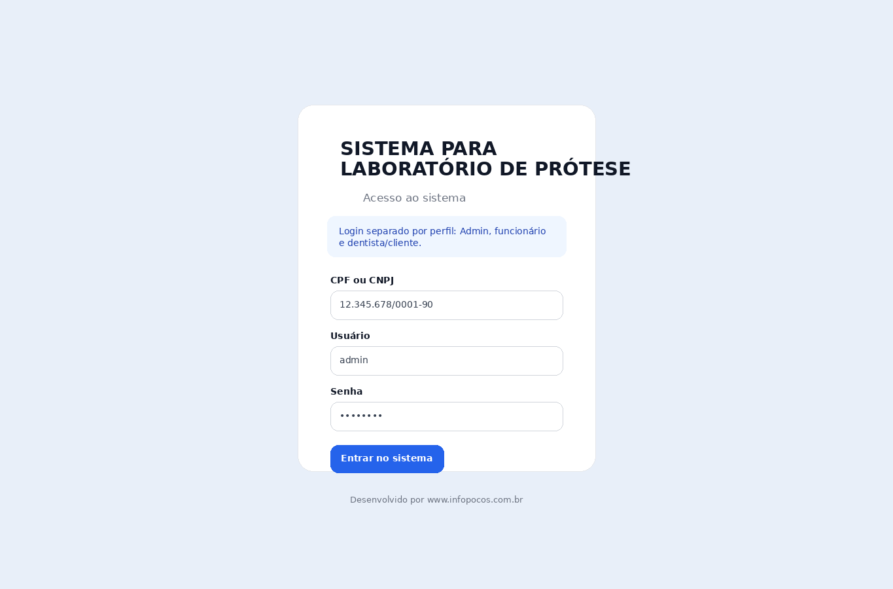
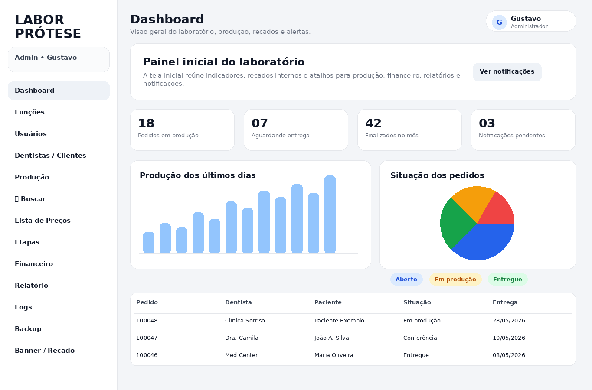
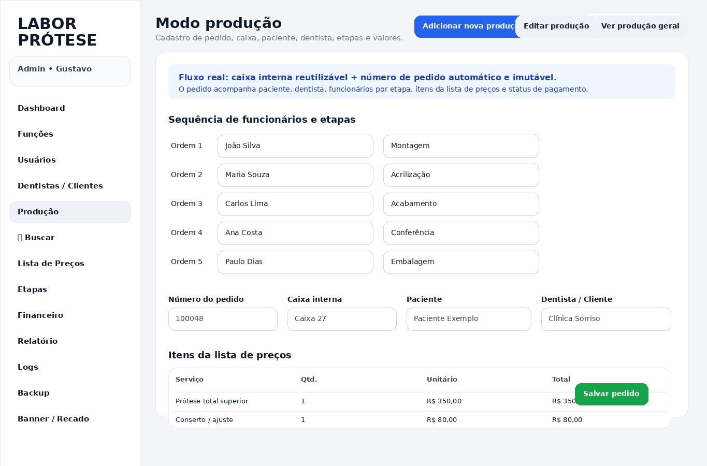
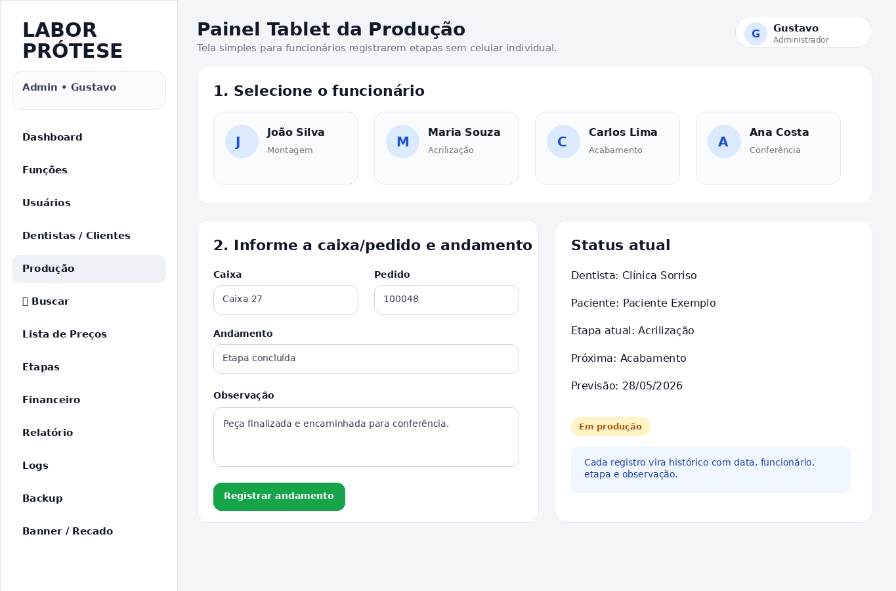
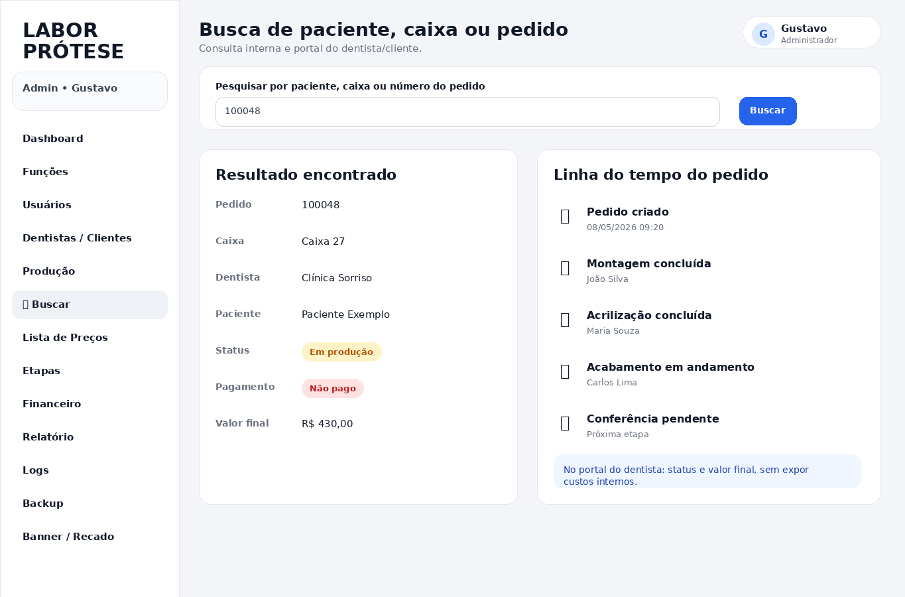
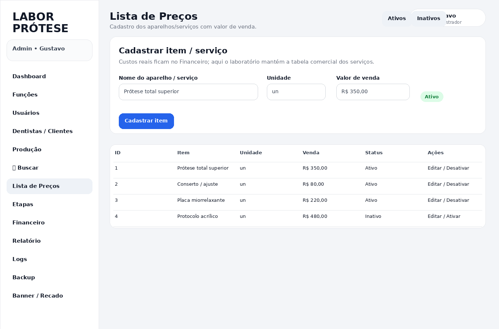
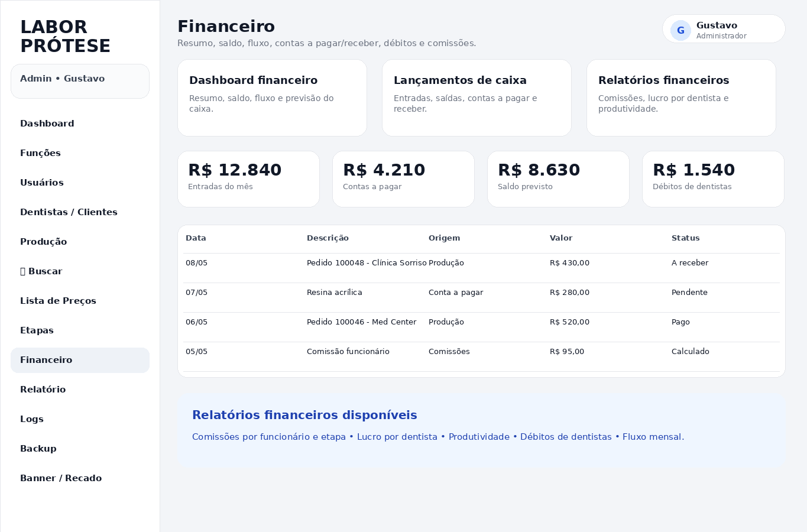
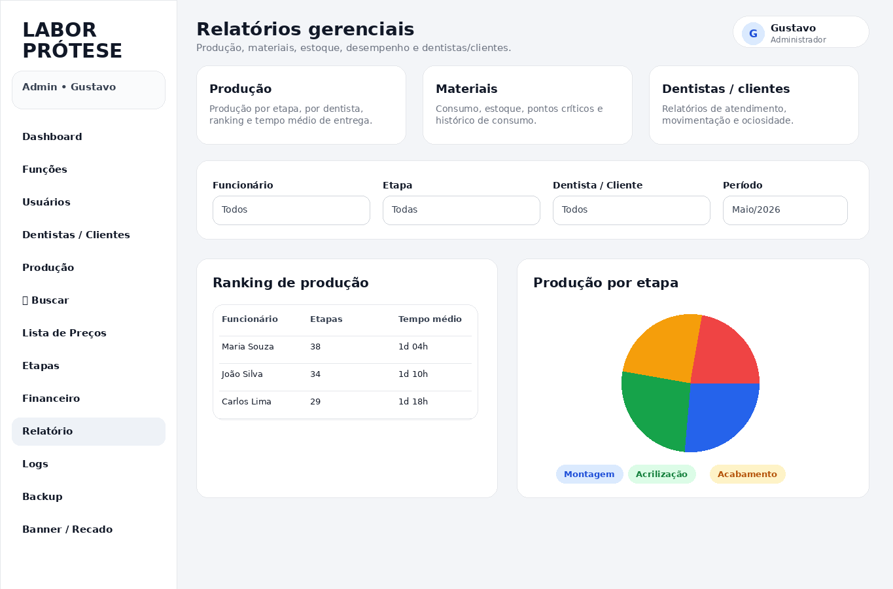
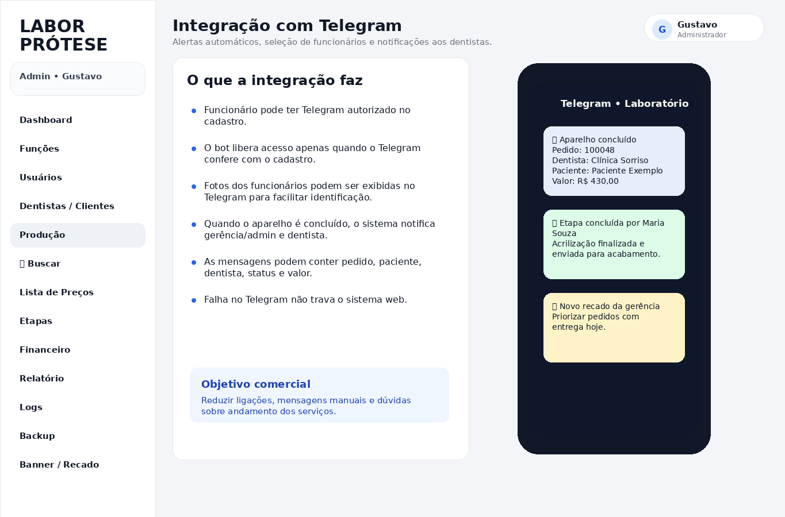
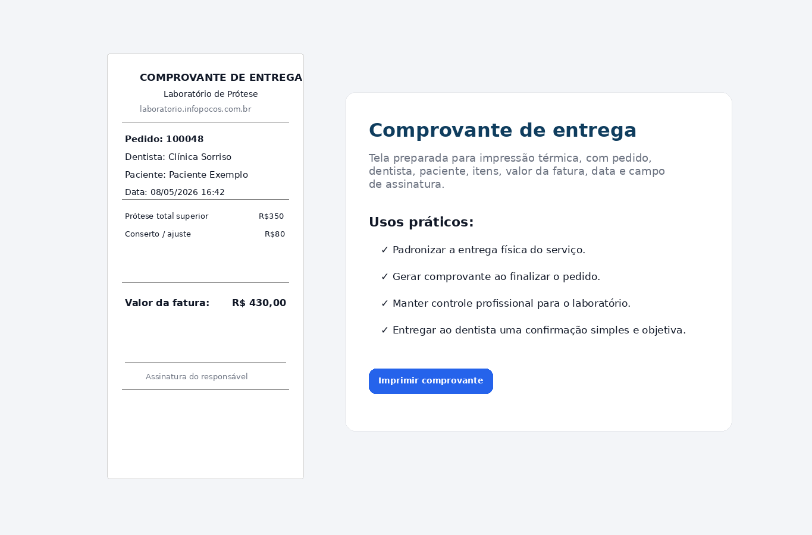

Controle completo da produção, financeiro, pedidos, clientes, funcionários, etapas, relatórios e notificações. Uma solução desenvolvida para organizar o laboratório, reduzir falhas e acompanhar cada serviço do início ao fim.
Este sistema foi desenvolvido para laboratórios de prótese dentária que desejam ter mais controle, organização e agilidade no dia a dia. Ele permite registrar cada novo serviço, acompanhar a produção por etapas, controlar valores, gerar relatórios, acompanhar funcionários e manter todo o histórico preservado.
Na prática, o laboratório deixa de depender apenas de anotações manuais, planilhas soltas ou mensagens perdidas. Tudo passa a ficar centralizado em uma plataforma web, acessível por computador, tablet ou celular.
Cadastro de pedidos, número da caixa, paciente, dentista, serviço, etapa atual, previsão de entrega e situação da produção.
Controle de valores, recebimentos, contas, fluxo financeiro, formas de pagamento e relatórios para acompanhamento da saúde do laboratório.
Notificações automáticas, avisos de produção, acompanhamento de etapas e comunicação rápida com os responsáveis.
Funcionários podem atualizar etapas diretamente em tablets nos setores, sem precisar usar celular pessoal.
Relatórios de produção, financeiro, produtividade, pedidos finalizados, pendências e acompanhamento por período.
Controle de usuários, permissões, registros de ações, preservação de histórico e organização dos dados importantes.
O sistema possui tela de acesso com usuário e senha, permitindo que cada pessoa entre apenas nas áreas autorizadas. Isso ajuda a proteger as informações internas do laboratório e separa o acesso de administradores, gerência, funcionários e clientes.

O painel principal apresenta uma visão rápida da operação: pedidos em aberto, serviços em produção, entregas, indicadores financeiros, gráficos e atalhos para as principais áreas do sistema.

Ao lançar um novo serviço, o laboratório pode registrar dentista, paciente, número da caixa, tipo de serviço, valor, previsão, observações e etapas da produção. Isso cria um controle claro desde o início até a entrega final.

Pensado para o uso dentro do laboratório, o painel de tablet permite que cada setor atualize o andamento do serviço. O funcionário seleciona seu nome, informa a caixa ou pedido e registra a etapa concluída.
Isso reduz erros, evita perda de informação e permite saber exatamente onde cada trabalho está dentro da produção.

A busca facilita localizar rapidamente qualquer serviço usando nome do paciente, número do pedido, número da caixa ou dentista. Ideal para atendimento rápido quando o cliente solicita uma posição sobre determinado trabalho.

O sistema permite manter uma lista organizada de serviços e valores. Isso padroniza cobranças, evita divergências e agiliza o lançamento de novos pedidos.

O módulo financeiro ajuda o laboratório a acompanhar entradas, saídas, valores a receber, valores pagos, pendências e resultados do período. Com isso, a gestão deixa de ser feita no escuro e passa a ter dados reais para tomada de decisão.

Os relatórios permitem acompanhar a produtividade, quantidade de serviços, situação dos pedidos, valores movimentados e desempenho por período. É uma ferramenta essencial para entender o crescimento e os gargalos do laboratório.

A integração com Telegram permite receber notificações automáticas sobre movimentações importantes do sistema, como atualização de etapas, novos pedidos, finalizações, avisos internos e acompanhamento da produção.
Isso facilita a comunicação entre administração, produção e responsáveis, deixando todos informados em tempo real.

Ao finalizar o processo, o sistema pode gerar comprovantes de entrega com informações importantes do serviço, como pedido, dentista, paciente, data, valor e campo de assinatura.

Solicite uma demonstração e veja como a INFOPOÇOS pode adaptar essa solução para a realidade do seu laboratório de prótese dentária.
Solicitar orçamento pelo WhatsApp